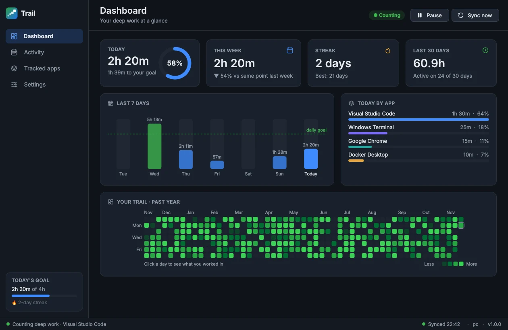
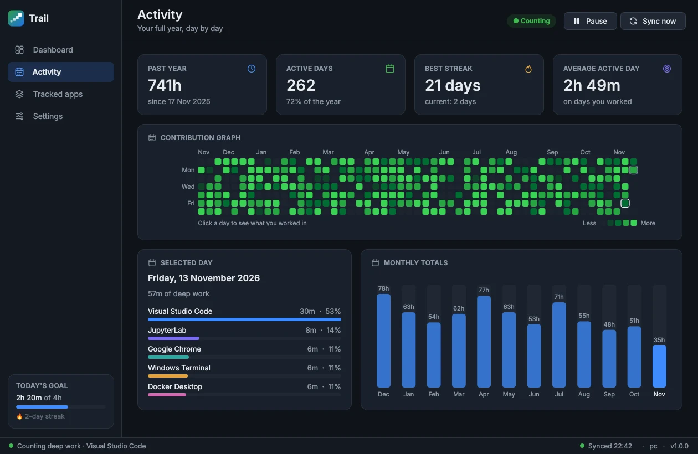
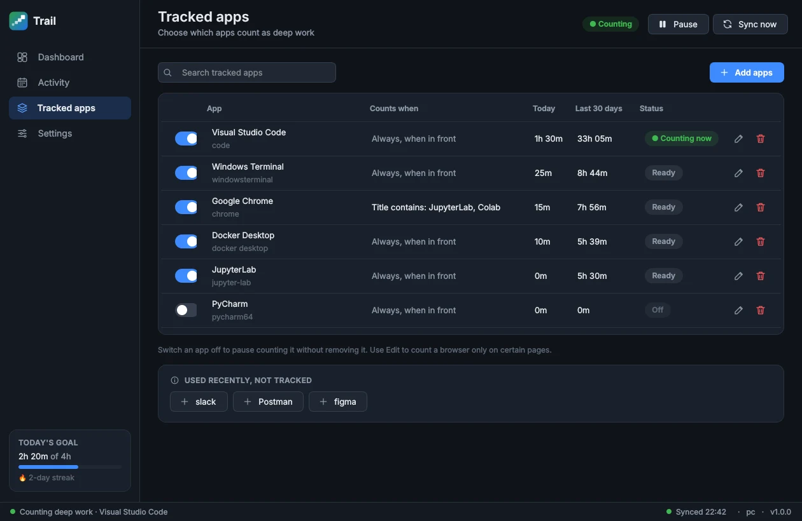

Trail quietly counts the time you spend in your real work tools, such as VS Code, terminals, Docker and Jupyter, and turns every focused day into a green square. Watch your trail grow.

No timers to start. No forms to fill in. Trail notices when you're actually working.
A contribution graph for your focus. Click any day to see what you worked in.
Pick your tools. Count a browser only while it shows Jupyter or Colab.
Set a daily goal, keep your streak alive, and get a gentle nudge in the evening.
Stops counting when you step away from the keyboard. Sleep and breaks never count.
Sign in with Google or email. Your history is saved and combined across PCs.
Only app names and minutes are stored. Never keystrokes, screenshots or window titles.
Download Trail-Setup.exe and run it. No admin rights needed. Trail starts with Windows and lives in your system tray.
Tick the tools that count as deep work. Change them anytime, or switch one off for a while.
Just work. Trail fills in the squares, tracks your streak and tells you when you hit your goal.
Trail breaks every day down by app, so you can see how much was coding, how much was notebooks, and how your weeks and months compare.


Switch apps on and off, see which one is counting right now, and add the ones you used recently with a single click.
Windows shows this for new apps that aren't code-signed yet. Click More info, then Run anyway. Trail's full source code is public on GitHub, and the installer is built there automatically from that code.
No. You can use Trail without one and your time stays on your PC. Signing in with Google or email saves your history safely and combines it across your computers.
For each day: which of your chosen apps you used and for how many minutes. Nothing else. See the privacy policy for details.
Trail checks for new versions by itself. When one is ready, an Update button appears; one click installs it and Trail reopens a few seconds later with your settings and history intact.
The installer is Windows-only for now. The code runs on macOS and Linux from source.
Free, private, and it updates itself.